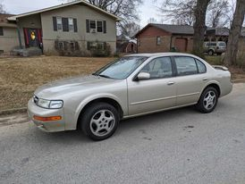

Nissan's full-size luxury-sport sedan, the Maxima is a cozy, powerful 4-door made to cater to your every need.
Starting about 3 years ago, I became the current owner of my Maxima. I absolutely love this car. Nissan knocked it out of the park with this one!!! I found this car with 60k miles, and had only been owned by the dealership owner's mother. This car was (and still is) absolutely perfect. I've put nearly 50k miles on it so far, with many more to come.
I'm planning to put some maintanence into the maxima soon! This is the current list of what it needs and why.
Having nasty plugs can cause your engine to burn fuel poorly, and cause misfires. They're recommended to be replaced every 100k miles, but I'd choose to do them whenever I buy the vehicle.
Over time, your brakes and rotors will wear down to nothing. Most of the time they're a non issue, but make sure you invest some money into what makes you stop correctly!
This is very important. Most people keep normal oil changes, but forget to change the transmission fluid! You should replace the fluid every 50k, although it's a good practice to replace it when youn purchase your vehicle, so YOU are in charge of it's maintanence.
These don't cause much issues, but it's cheap and affects the air your engine has to use. Keep it clean!
This is also extremely important! Make sure your belts are in date and not cracked! Every 100k you should do a full drivebelt replacement. Otherwise, they might snap and leave you stranded.
Here's what a maxima looks like when it's been lowered and tinted! That's basically all I have left, before i've made it how i'd like it to be!
So, picture this. It's the middle of december, 10PM, and you have a mission. You WILL fix those trashed CV axles before the morning comes. That's what I'd told myself anyway. A lesson I learn quite often with mechanics, is that Removal is almost ALWAYS easier than re-installation. On Front wheel drive cars, the CV axles are the parts that spin the wheels. They're also held on to the coils, which are huge, TIGHTLY WOUND springs. When you remove CV axles, sometimes it can cause those springs to slightly unwind, which can cause your entire front suspension to sag. Needless to say, that gave me LOTS of trouble. It was well worth it though, when I finally got to drive without fear of my CV axles exploding. (Extreme case, but mine were WELL worn.) If you hear lots of clicking any time you turn right or left, there's a fair chance your CV axles are going bad. I definitely recommend getting that fixed!!
But, that's basically it! It's the perfect daily. I've got all the room I'll ever need, it's quick and rides well. After some tint, and maybe some better wheels I'll be happy with my Maxima.